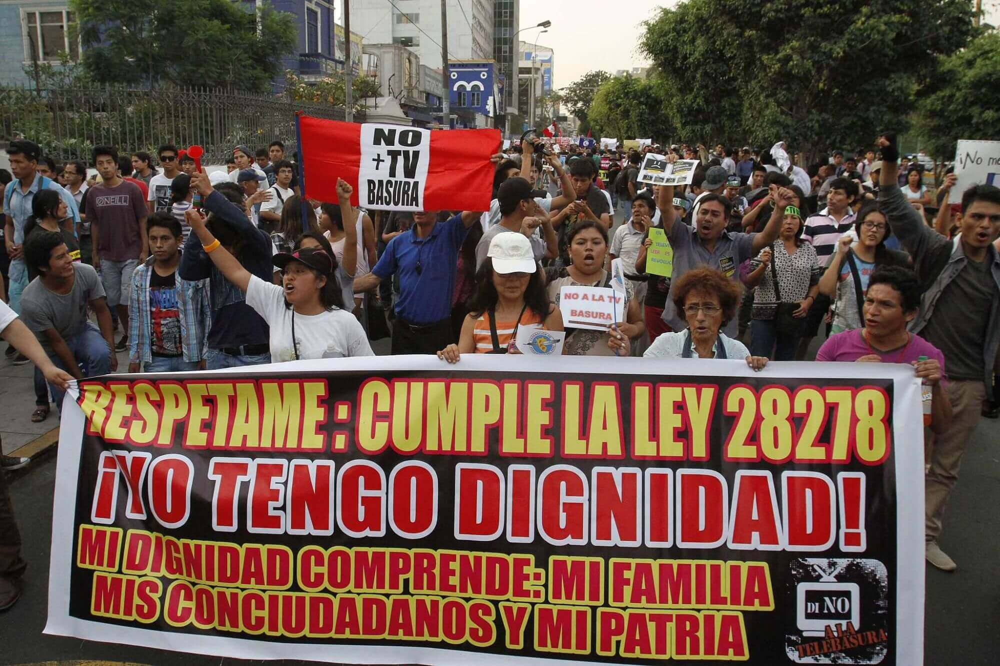

Sepa usted
La problemática de la televisión peruana, que cada cierto tiempo desata polémica, identifica tres actores directos: productores, población y empresariado.
El contenido busca satisfacer al público que lo consume dándole la ‘comidilla’ que ya se ha acostumbrado a ver. Ahí, se empieza a tejer el círculo vicioso que busca culpables y del que todos quieren evadir responsabilidades.
El empresariado por su parte, anuncia en los programas más vistos de la TV (y que no necesariamente son los que tienen contenido cultural o educativo), con el propósito de buscar clientes para sus productos. Su inversión alimenta la difusión de estos programas y es por ello que aparecen ‘nuevos espacios’ con un formato similar acortando así la variedad de contenidos.
El interés por captar mayor audiencia ha llevado a varios programas a cometer excesos en la difusión de la vida privada de varios artistas. Caen en el morbo y crean corrientes de opinión sin que se trate de un asunto de importancia nacional.
La privacidad termina por convertirse en un negocio rentable lleno de personajes que les ofrecen historias personales. Realidades que se han vendido al mejor postor que, mediante su pantalla, comparte con usted lo feo y lo bonito de una vida ajena.
Y, usted, ¿qué tan dispuesto está a seguir siendo parte de este negocio?
- 
Primera marcha por la regulación del contenido en televisión realizada el año pasado.
La regulación de la TV en el mundo
Perú no es el único país donde un gran porcentaje de su población ha pedido cambios en la televisión. Varios países de Europa y América, han adoptado medidas de regulación proponiendo entretenimiento sano y programas culturales que ellos consideran una mejor opción para televisión.
Chile: el gobierno exhorta a los medios de comunicación televisiva que su programación debe contener al menos cuatro horas, a la semana, de programas culturales. Estos espacios, además, deben trasmitidos en horarios de alta audiencia.
Brasil: la regulación en los contenidos de televisión rige desde el año 1988. Esta ley señala que cada programa de televisión debe tener una guía educativa, artística y cultural. Esta ley, llamada Ley de Regulación de los Servicios de Difusión no dictaminan los contenidos, si no funciona como una plantilla. En Colombia y México, la situación es similar.
Estados Unidos y Canadá: proponen una regulación distinta. Estos gobiernos sugieren, a la televisoras, la aplicación de programas culturales y producciones propias del país. Estos contenidos deben sumar un 60% de la programación total.
En Perú, se presentó un proyecto ley de la bancada nacionalista el año pasado, pero quedo sin efecto. En este nuevo parlamento, la congresista oficialista, Mercedes Araoz, desató la controversia con declaraciones que responsabilizaban a la televisión en la educación de los menores de edad.
Sin embargo, existe un proyecto ley presentado por el fujimorista de Fuerza Popular, José Marvin Palma, el 12 de septiembre. El propósito de este proyecto, difundir cultura mediante programas educativos. (Aquí puedes leer el proyecto de ley completo)
La regulación en medios es un tema que seguirá generando polémica entre quienes lo creen necesario y quienes no. El intervencionismo del gobierno, en los contenidos de la televisión peruana en la época de los 90, aún trae muchos recuerdos.
¿Los ciudadanos podemos presentar un Proyecto de Ley?
Los ciudadanos peruanos podemos participar en la creación de un proyecto de Ley mediante la iniciativa ciudadana, amparada en la Ley 26300.
Para que un ciudadano presente un proyecto de Ley, debe acercarse a las oficinas del Jurado Nacional de Elecciones y pedir la orientación y cartillas correspondientes. Cualquier proyecto de Ley debe contar con el 0.3% de firmasdel total de la población votante y huella digital.
El expediente con la iniciativa ciudadana debe contar con un domicilio legal asi como dos personeros. Luego, los documentos deben entregarse al Jurado Nacional de Elecciones para que sea revisado y luego entregado a Oficilía Mayor del Congreso de La República.
Una vez en el Congreso, el proyecto debe ser ingresado a la comisión que tendrá que validar o no el proyecto. Esto no puede exceder de los 120 días desde su ingreso.
Luego, es discutido en el pleno del congreso y de ser aprobada es llevada al Poder Ejecutivo para su promulgación en caso no se hagan observaciones. Si se archiva el proyecto, la Constitución señala que, el ciudadano, puede someterse a referéndum, dicho proyecto de ley, como una segunda opción. Tiene que ser solicitada por el 10% población electoral.
Si se trata de grupos organizados que quieren presentar algún proyecto, el mismo Congreso ofrece talleres informativos para elaborar Proyectos de Ley.
-
Investigación:
- Mayra Albán
-
Jefe de la unidad de Investigación:
- Ángel Páez
-
Desarrollo web:
- Génesis León
-
Edición de video:
- Grace Mora
- Karla Espinoza
- José Durán
- Carlos Burzzio
-
Fotografía:
- Gabriel Ramos
- Mauricio Malca
- Hernán Hernández
- Laura Gamero